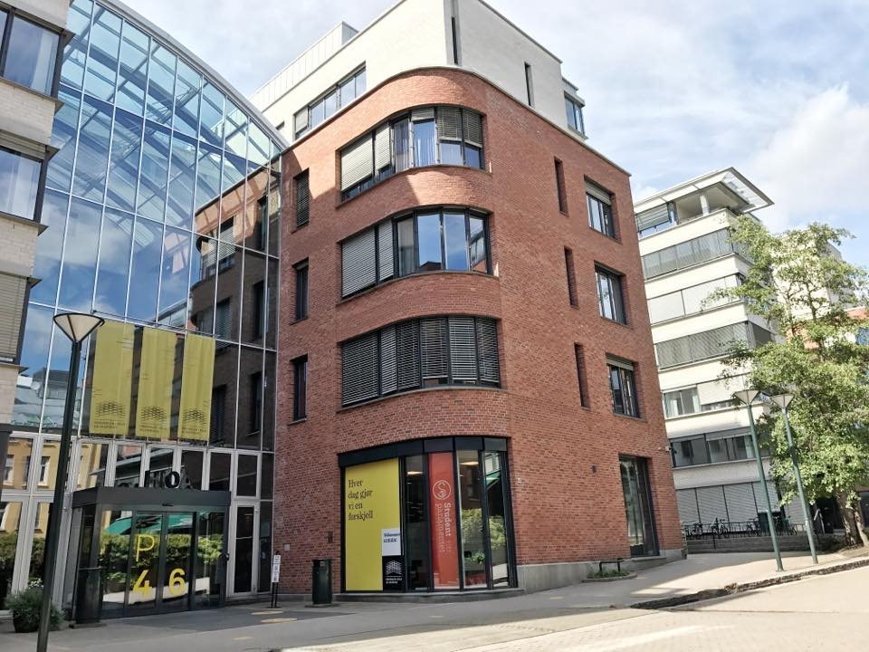

En rekke av bygningene ligger i det tradisjonsrike Frydenlund-området ved Bislett. Hvor man tidligere kunne kjenne duftet av malt og humle fra et av de største ølbryggeriene i landet, finner du nå undervisningsrom, universitetsbibliotek, lesesaler og kantiner.
I nærheten finner du gjentatte av bygningene til universitetet i Pilestredet park, det tidligere Rikshospitalet, og universitetet sitt største bygg: Ellen Gleditschs hus i Pilestredet 35.
Oslomet sine bygg i Pilestredet har trimrom, klatrevegg og gymsaler som studenter og lærere kan benytte seg av, også på fritiden. Vi har også velferdlokaler for studenter med blant annet en kro.
Hovedresepsjonen til Oslomet ligger i Clara Holsts hus, i bygg P46. Her kan du få svar på administrative spørsmål, samt navigasjon på campus.
Åpningstider: Mandag-fredag 08:00 - 15:00
Telefon: 67 23 60 00
Studenthuset P52 finner du øverst på campus i Pilestredet. Studenthuset er for alle studenter ved OsloMet. Du finner blant annet leseplasser, grupperom, shuffleboard og studentforeningskontorer. Studenthuset er også arena for debatter, arrangementer og filmvisninger gjennom hele året.
Her finner du også Studenttorget, som er både en skranke og en rekke tjenester samlet på et sted. Blant annet kan de hjelpe deg med blant annet generell studieveiledning, informasjon om søknad og opptak, veiledning og hjelp til studenter, i tillegg til mange andre tjenester.
Åpngingstidene til Studenttorget: 10:00-14:00
Telefon: 67 23 77 78